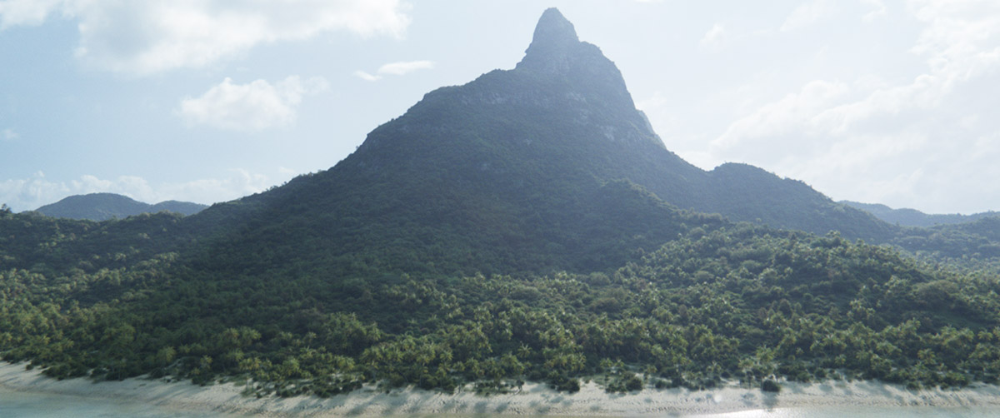

CGWORLD.jpに掲載された、Spade&Co.の木川裕太氏による個人制作作品「Island」の技術解説記事。Houdiniのプロシージャルワークフローと、Arnoldでのレンダリングを組み合わせ、大規模な自然景観をフルCGで作り上げる制作過程がまとめられている。
URL
https://cgworld.jp/feature/202012-cgw268houdini.html
概要
HoudiniのHeight Field機能を使った地形生成から、SpeedTree・HyperGrass・Megascansを組み合わせた植生スキャッタリング、Arnoldでのボリューム・シェーダー設定、ライティングまで、大規模な自然景観をフルCGで作り上げるワークフローが一気通貫で解説されている。VOPやHDA化による作業の仕組み化にも触れられている。
記事では、全てをプロシージャル化するのではなく手動作業とのバランスを取ること、ランダム配置ではなく生態系を意識したアセットスキャッタリングでリアリティを出すこと、画面に映る部分を重点的に作り込みつつ死角は簡略化する効率化の考え方、ジオメトリの変更に強いレイヤーシェーダーによるマテリアル運用など、実制作に活きる考え方が語られている。